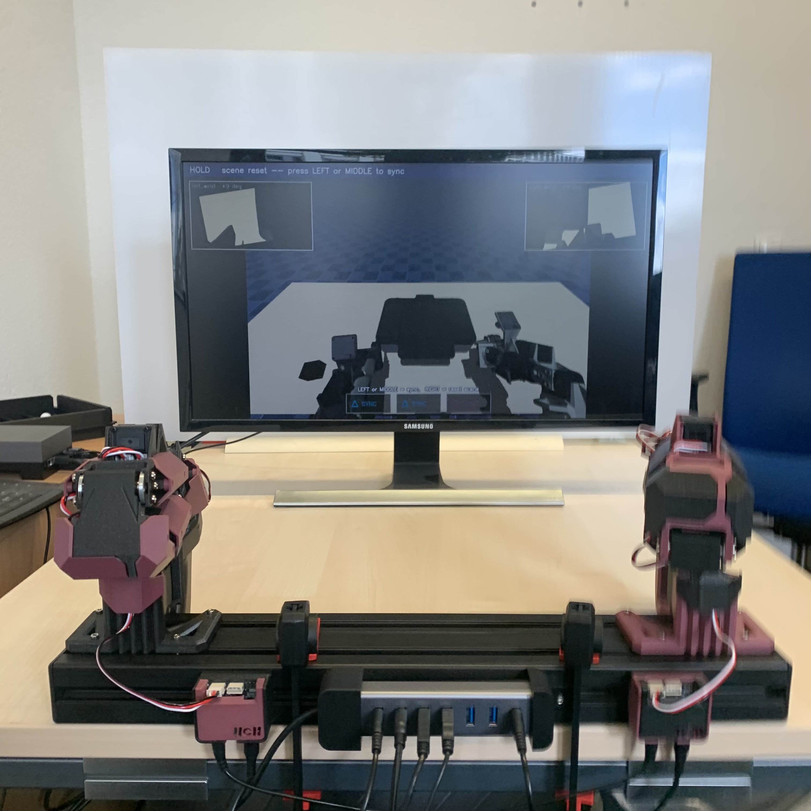

Image pending

Lab project
Vision language action models for bimanual manipulation
Cognitive Robotics Lab, University of Bonn
I fine tuned and compared two VLA models, π0.5 and X-VLA, on a bimanual robot platform for two tasks: brick placement and multi stage bottle opening.
- Built the layer between data, models and robot: LeRobot dataset conversion, action space registration, and a FastAPI policy server and client for real robot and MuJoCo rollouts.
- π0.5 reached 90% success on brick placement and 20% full task success on bottle opening.
- Alignment with a model's pretrained action space was a key factor in the performance gap between the two models.
Openpi (π0.5) / X-VLA / LeRobot / MuJoCo / FastAPI / Python